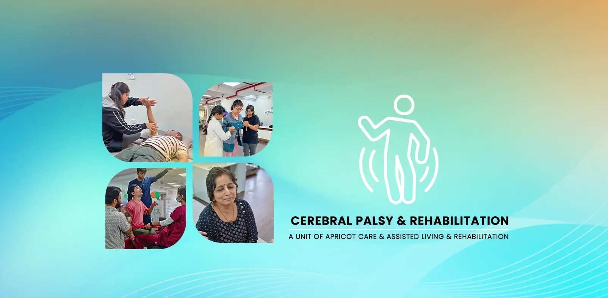

Specialized Care for Adolescents & Adults with Cerebral Palsy in Pune


A Lifelong Partnership in Health, Mobility, and Independence
Living with Cerebral Palsy (CP) is a lifelong journey. As an adolescent or adult, you have developed incredible resilience and unique strategies to navigate the world. However, the challenges you face today may be different from those you had as a child. As your body changes over time, new issues like chronic pain, increased fatigue, or changes in mobility can arise, requiring a new, more sophisticated approach to care.
At Apricot Care Assisted Living and Rehabilitation in Pune, we specialize in providing expert, compassionate rehabilitation for adolescents and adults living with Cerebral Palsy. We understand that your needs have evolved. Our goal is to be your long-term wellness partner, moving beyond developmental milestones to focus on maintaining your function, preventing secondary complications, managing pain, and empowering you to live your most active, independent, and fulfilling adult life.
Understanding Cerebral Palsy in Adulthood
Cerebral Palsy is a group of disorders affecting a person's ability to move and maintain balance and posture. It is caused by damage to the developing brain, which most often occurs before birth. It's important to remember that CP is non-progressive—the original brain injury does not get worse over time.
However, the strain of living with abnormal muscle tone and movement patterns for many years can lead to secondary musculoskeletal conditions in adulthood. With Cerebral Palsy being one of the most common causes of childhood disability in India, there is a growing community of adults who require specialized care to manage these long-term effects.
Why Do Needs Change in Adulthood?
As an adult with CP, you may start to experience new challenges, including:
- Chronic Pain: From years of stress on joints and muscles.
- Increased Fatigue: The energy required to move can be significantly higher, leading to exhaustion.
- Premature Aging: The physical demands of CP can lead to musculoskeletal issues that are more common in an older population.
- Changes in Mobility: A walking pattern that worked in your youth may become less efficient or more painful over time.
Our program is specifically designed to proactively address these adult-onset challenges.
Request a Call Back to Discuss a Recovery PlanOur Goals for Adult Cerebral Palsy Care
Our focus shifts from development to lifelong management and wellness. We aim to:
- Effectively manage chronic pain and reduce its impact on your daily life.
- Maintain and improve your current level of mobility and functional independence.
- Prevent or manage secondary complications like joint contractures and deformities.
- Improve your overall fitness, strength, and endurance to combat fatigue.
- Enhance your quality of life and support your continued participation in work and community activities.
Our Comprehensive Program for Managing CP in Adulthood
Our integrated team creates a personalized plan to address your unique needs and goals.
Advanced Pain & Fatigue Management
These are often the primary concerns for adults with CP. We take a multi-faceted approach.
- How we help: We use a combination of hands-on manual therapy to release tight muscles, specialized stretching programs, and education on joint protection and energy conservation techniques. Our goal is to break the cycle of pain and fatigue that limits your life.
Spasticity & Contracture Management
Lifelong management of muscle tightness (spasticity) is key to protecting your joints.
- How we help: Our Physiotherapists design a targeted program of stretching and positioning to maintain muscle length and prevent the development of permanent joint stiffness (contractures). We can also assess the need for bracing or splinting.
Gait Analysis & Mobility Training
Your walking pattern may change over time. A proactive approach can preserve your ability to walk safely and efficiently for longer.
- How we help: We conduct a detailed analysis of your gait to identify inefficiencies or compensatory patterns that could cause pain. We then use targeted exercises to improve your walking pattern and can help assess and train you with the appropriate mobility aid (such as a walker or crutches) if needed.
Functional Strength & Conditioning
Maintaining muscle strength is crucial for supporting your joints and making movement more efficient.
How we help: We design a safe and accessible strengthening program that targets key muscle groups without causing undue strain. A stronger body uses less energy to move, which directly helps in managing fatigue.
Occupational Therapy for Lifelong Independence
Our occupational Physiotherapists are experts in finding practical solutions to help you maintain your independence as you age.
This therapy helps you:
- How we help: We can help you adapt daily tasks to make them easier, provide training on the latest assistive technology, and offer consultations on modifying your home or workspace for optimal accessibility and ergonomics.

our service
Our Comprehensive Care and Support Services
.webp)
.webp)
-(1).webp)
24/7 Nursing and Medical Supervision
At Apricot Care Assisted Living and Rehabilitation, we provide 24/7 nursing support to ensure that you receive continuous care and medical monitoring. Whether you're staying in our facility or recovering at home, our trained nurses and medical staff are always available to address your needs, ensuring a safe and secure environment throughout your recovery journey.
.webp)
.webp)
.webp)
.webp)
.webp)
.webp)
.webp)
.webp)
.webp)
.webp)
.webp)
.webp)
Why Apricot Care Assisted Living and Rehabilitation is Pune's Choice for Adult CP Care
Expertise in the Adult with CP
We are one of the few centers in Pune with a specific focus on the unique, evolving needs of adolescents and adults with Cerebral Palsy, rather than focusing solely on pediatrics.
A Proactive, Preventative Approach
Our core philosophy is to anticipate and prevent the secondary musculoskeletal problems that can arise in adulthood, preserving your function for the long term.
A Lifelong Wellness Partner
We aim to build a long-term relationship with you, serving as your trusted resource for managing your health and mobility as you navigate different life stages.
A Fully Integrated, Multidisciplinary Team
Your care is a coordinated effort between physiotherapy, occupational therapy, and other specialists to address your needs holistically.